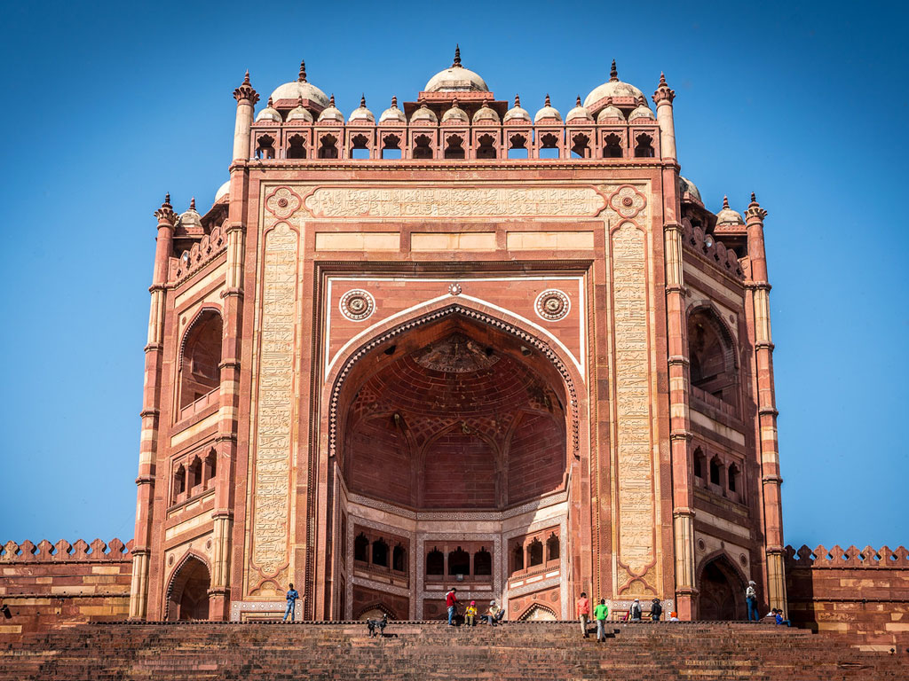
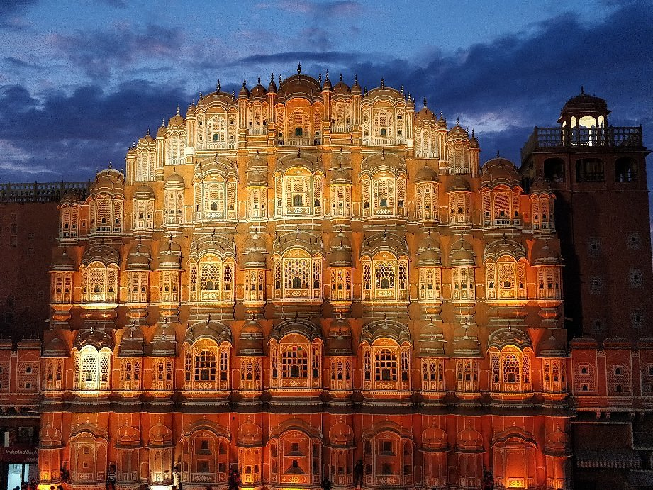

There are many reasons why India is such an exciting country to explore, whether you are an Indian or a foreign tourist. The rich history and heritage of our land are evident in the magnificent palaces, forts, minarets, temples and
churches that pepper the length and breadth of this country. These architectural marvels speak volumes about India’s past, culture, beliefs, and of course, artistry. So, if you are a travel buff who wants to peek into the cultural
and architectural history of our diverse subcontinent, you must visit these 25 popular monuments of India at least once in your lifetime.
Top 10 Hostorical Place in India
1)Taj Mahal
The Taj Mahal is an iconic structure UNESCO World Heritage site in the city of Agra. Built between 1631 and 1654, the construction of the Taj Mahal was ordered by the ruling emperor Sha Jahan as a mausoleum for his favourite wife,
Empress Mumtaz Mahal. The white marble structure, with its central dome flanked by arches and smaller domes as well as minarets, is famed for its incredible symmetry and opulent design. Inside, the Taj Mahal is lavishly decorated
with plant life imagery and Koranic calligraphy, each aspect of which is entirely individual. In fact, it is believed that approximately 20,000 workers were needed to create the Taj Mahal. Visitors to the Taj Mahal can enter the
main mausoleum (although generally not the underground floors) and also enjoy its incredible gardens and reflective lakes. Nearby are several other beautiful buildings including the Taj Mahal’s mosque and the Jilaukhana gated complex.
2)Agara Fort
The Agra Fort is one of India’s most impressive and important forts and palaces, close to the Taj Mahal. Primarily intended as a military structure, the Agra Fort is made up of 20 metre high walls with a circumference of 2.5 kilometres.
However, the fort was later transformed into a city unto itself expanding into a labyrinth of red sandstone buildings, including a palace, a mosque, homes, halls, and monuments. Incredibly well-preserved, the fort is a UNESCO World
Heritage site. In addition to the fort itself, some of the most impressive structures within the Agra Fort complex include the Diwan-i-Am or ‘Hall of Public Audiences’, from which Shah Jahan conducted state business, the 17th century
Nagina Masjid or ‘Gem Mosque’, and the mirror encrusted Shish Mahal palace. The Anguri Bagh gardens are also very beautiful, having been extensively restored.
3)Red Fort
The Red Fort (Lal Quila) in Delhi was originally built in 1639 by the fifth Emperor of India’s Mughal Dynasty, Shahjahan, when he moved India’s capital from Agra to Delhi. The Red Fort, which derives its name from the red sandstone
bricks which make up its protective walls, was built as Shahjahan’s new palace and as a defensive structure. The walls of the Red Fort are an imposing sight, rising up to 33 metres in places, and featuring ornate carvings, domes,
and minarets. In addition to the Red Fort itself, the historic Red Fort Complex is made up of palaces, gardens, halls, monuments, mosques, and even another fort, Salimgarh. The Red Fort Complex took almost a decade to complete
and covers a staggering 120 acres, at one time holding a population of 3,000 people. Its architecture is considered to be a testament to the creativity of the Mughals, enriched by Persian, European and Indian imagery. The Red Fort
Complex consists of numerous impressive structures, including the Diwan-i-Am or Hall of Public Audience, once the home of the royal throne and the private apartments along the Stream of Paradise or ‘Nahr-i-Behisht’, as well as
several other palaces and even the Chhatta Chowk, or palace market. All of these are placed within strict geometrical lines within the Red Fort Complex’s distinctive octagonal shape.
4)Qutub Minar
The Qutub Complex (Qutb Complex) in southern Delhi is made up of a series of religious and cultural buildings and structures, many of which date back to the Slave Dynasty (thirteenth century). The Qutub Complex is located in the Mehrauli,
once known as Lal Kot, a city which dates back to 1060 when it was founded by the Tomar Rajput ruler, Anang Pal. One of the first buildings constructed as part of the Qutub Complex was the Might of Islam Mosque. In the centre of
the mosque is an ancient iron pillar believed to date back to the fourth century AD. The most famous building in the Qutub Complex, the Qutub Minar, is a looming sandstone minaret known for its incredible height and ornate carvings.
Its construction began in around 1202. When it was completed in 1368, Qutub Minar reached a height of 72.5 metres, making it the tallest “skyscraper” of its time, and it remains the tallest sandstone tower in India. The Qutub Minar
has since been damaged by lightning on several occasions and its upper floors were subsequently rebuilt, most notably in 1328, 1368 and in 1503, when it was enlarged.
5)Humayun's Tomb
Humayun’s Tomb, Delhi is the first of the grand dynastic mausoleums that were to become synonyms of Mughal architecture with the architectural style reaching its zenith 80 years later at the later Taj Mahal. Humayun’s Tomb stands within
a complex of 27.04 ha. that includes other contemporary, 16th century Mughal garden-tombs such as Nila Gumbad, Isa Khan, Bu Halima, Afsarwala, Barber’s Tomb and the complex where the craftsmen employed for the Building of Humayun’s
Tomb stayed, the Arab Serai..
6)Ajanta Ellora Caves
Celebrated as one of the best examples of rock cave architecture in India, Ajanta and Ellora Caves situated in the state of Maharashtra near Aurangabad are one of the UNESCO World Heritage Sites and Seven Wonders of India. They are
nestled at a distance of approx more than 95 km from each other. Using only chisel and hammer Buddhist monks carved murals and sculptures depicting the life of Buddha. These are still considered as one of the most splendid work
of Buddhist art in India. They are one of a kind of caves hewn into the Sahyadri Hills portraying the outstanding work of Ancient Indian artisans.
7)Fatehpur Sikri

Fatehpur Sikri is located in Agra District in the State of Uttar Pradesh in northern India. It was constructed southeast of an artificial lake, on the slopping levels of the outcrops of the Vindhyan hill ranges. Known as the “city
of victory”, it was made capital by the Mughal emperor Akbar (r. 1556-1605 CE) and constructed between 1571 and 1573. Fatehpur Sikri was the first planned city of the Mughals to be marked by magnificent administrative, residential,
and religious buildings comprised of palaces, public buildings, mosques, and living areas for the court, the army, the servants of the king and an entire city. Upon moving the capital to Lahore in 1585, Fatehpur Sikri remained
as an area for temporary visits by the Mughal emperors.
8)Victoria Memorial
The reason behind the building of a monument of this grand a scale is indeed an interesting one. This stunning creation is the brainchild of Lord Curzon and was created to commemorate the twenty-fifth-year reign of the Queen over India.
The Queen had become the figure head of India after the Revolt of 1857 and successfully ruled over the country until her death in 1901. Lord Curzon wanted that the monument that would be dedicated to her should be stately, spacious
and large, with a beautiful garden. In fact, the funds for the construction of the Victoria memorial were raised from the people of India. A sum of 5 lakh rupees was raised, and the result is this awe-striking monument, that is
a literal feast for the eyes. King George V and the Prince of Whales laid down the foundation stone for the memorial in 1906, and the memorial was finally opened to the general public in 1921.
9)Hava Mahel

Hawa Mahal was built by Kachhwaha Rajput ruler Maharaja Sawai Pratap Singh in the year 1799. When the maharaja saw the structure of Khetri Mahal in Jhunjhunu, Rajasthan, he was so impressed that he decided to build a palace modeled
on it. Hawa Mahal, also called the Palace of Breeze, was the result of that inspiration. This five-storied structure was designed by Lal Chand Ustad as an extension of the City Palace. Starting from the City Palace’s edge, Hawa
Mahal extends to the women’s chambers aka zenana. During those days, the Purdah system was strictly followed and Royal Rajpur women weren’t allowed to show their face to strangers or even appear in public. The palace comprises
953 windows which enabled them to get a glimpse of the day-to-day activities and festivities happening on the street below without appearing in public.
10)Amer Fort
One of the top tourist attractions of Jaipur, the huge Amer Palace Fort sits atop a small hill, and is located at a distance about 11 km from the main city. The magnificent Amer Fort is an extensive palace complex that has been built
with pale yellow and pink sandstone, and with white marble. The fort is divided into four main sections that are graced with their own courtyards. .